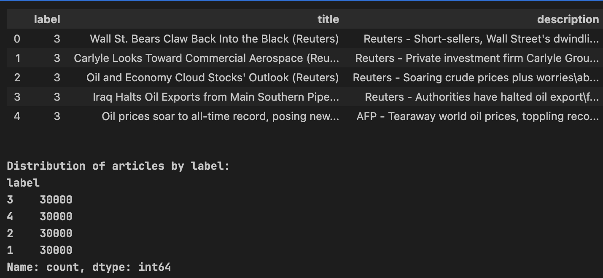

Chapter 1 Dataset Overview & Data Quality
1.1 Problem Objective & Feature Engineering
Classification Objective:
Classify news articles into 4 topic categories: World (label 1), Sports (label 2), Business (label 3), and Sci/Tech (label 4). The AG News dataset from Hugging Face (sh0416/ag_news) provides the raw text data.
Feature Engineering:
Each record contains a title and description field. To maximize the available textual signal, we concatenated both fields into a single text column: title + " " + description. This unified field serves as the sole input feature for all downstream analysis and modeling.
Sports and World vocabulary is expected to be highly distinctive (athlete names, geopolitical terms). Business and Sci/Tech likely overlap significantly due to shared corporate and technology vocabulary — this will be the primary classification challenge.
1.2 Data Scale & Quality Assessment
The dataset consists of 120,000 training samples and 7,600 test samples — a substantial corpus for both traditional ML and deep learning approaches. After cleaning (deduplication + null removal), the dataset remains at 120,000 rows — the data is perfectly clean with zero duplicates.
from datasets import load_dataset
ds = load_dataset("sh0416/ag_news")
print(ds)
train_ds = ds["train"]
test_ds = ds["test"]
print(f"Number of training samples: {len(train_ds)}")
print(f"Number of testing samples: {len(test_ds)}")
print(f"Features: {train_ds.features}")
import pandas as pd
df_train = ds["train"].to_pandas()
df_test = ds["test"].to_pandas()
print(f"Train size before cleaning: {len(df_train)}")
df_train['text'] = df_train['title'] + " " + df_train['description']
df_test['text'] = df_test['title'] + " " + df_test['description']
df_train = df_train.drop_duplicates(subset=['text']).dropna(subset=['text'])
df_test = df_test.drop_duplicates(subset=['text']).dropna(subset=['text'])
print(f"Train size after cleaning: {len(df_train)}")1.3 Target Class Balance
The dataset is perfectly balanced: each of the 4 labels contains exactly 30,000 articles (25%). This eliminates any class imbalance concern. Accuracy can be used as the primary evaluation metric, and no oversampling or SMOTE techniques are needed.
Zero duplicates eliminates data leakage risk between train/validation sets. Combined with perfect class balance, this dataset provides an ideal foundation for unbiased model evaluation.

Chapter 2 Physical Text Structure Analysis
2.1 Word Count Distribution
The KDE plot + Boxplot analysis reveals a remarkably uniform distribution of word counts across all 4 classes, with a peak concentration at 30–45 words. The average article length is 37.85 words, ranging from a minimum of 8 to a maximum of 177 words.
Articles with only 8 words were found to contain raw HTML tags — artifacts from web crawling noise. These must be cleaned using Regex before any tokenization step to prevent garbage tokens from polluting the vocabulary.
import matplotlib.pyplot as plt
import seaborn as sns
import numpy as np
df_train['word_count'] = df_train['text'].apply(lambda x: len(str(x).split()))
plt.figure(figsize=(12, 6))
sns.boxplot(data=df_train, x='label', y='word_count', palette='viridis')
plt.title('Word Count Distribution by Class')
plt.xlabel('Label (1: World, 2: Sports, 3: Business, 4: Sci/Tech)')
plt.ylabel('Word Count')
plt.grid(axis='y', linestyle='--', alpha=0.7)
plt.show()
plt.figure(figsize=(12, 6))
sns.kdeplot(data=df_train, x='word_count', hue='label', palette='viridis', fill=True, common_norm=False, alpha=0.5)
plt.title('Density of Word Counts Across Classes')
plt.xlabel('Word Count')
plt.xlim(0, 150)
plt.show()
print(f"Minimum word count: {df_train['word_count'].min()}")
print(f"Maximum word count: {df_train['word_count'].max()}")
print(f"Average word count: {df_train['word_count'].mean():.2f}")2.2 Deep Learning Input Parameters
The 95th percentile word count is 53 words. This becomes the recommended max_length parameter for deep learning models like BERT and LSTM:
- Texts with < 53 words: Apply padding to reach uniform length
- Texts with > 53 words: Apply truncation to fit within budget
Recommended max_length = 53 captures 95% of data while maximizing hardware efficiency. This avoids wasting GPU memory on excessive padding while retaining nearly all textual signal.
Text Cleaning Function:
import re
import html
def clean_text(text):
text = html.unescape(text)
text = re.sub(r'<[^>]+>', ' ', text)
text = re.sub(r'[^a-zA-Z\s]', ' ', text)
return ' '.join(text.lower().split())
df_train['clean_text'] = df_train['text'].apply(clean_text)
df_test['clean_text'] = df_test['text'].apply(clean_text)


Chapter 3 Lexical & Semantic Analysis
3.1 Unigram Frequency Analysis & Stopword Identification
The Top 15 unigrams across the entire dataset are dominated by noise words: new, said, reuters, ap, year, quot, and days of the week. These terms appear uniformly across ALL 4 classes, providing zero discriminative power — they are pure noise.
Build a Custom Stopwords list to supplement sklearn's built-in English stopwords: reuters, ap, afp, said, quot, new, year, monday, tuesday, wednesday, thursday, friday. These news-wire artifacts must be removed before vectorization.
from sklearn.feature_extraction.text import CountVectorizer, TfidfVectorizer
import matplotlib.pyplot as plt
import seaborn as sns
label_mapping = {1: 'World', 2: 'Sports', 3: 'Business', 4: 'Sci/Tech'}
def get_top_n_words(corpus, n=10, ngram_range=(1,1), stop_words='english'):
vec = CountVectorizer(ngram_range=ngram_range, stop_words=stop_words).fit(corpus)
bag_of_words = vec.transform(corpus)
sum_words = bag_of_words.sum(axis=0)
words_freq = [(word, sum_words[0, idx]) for word, idx in vec.vocabulary_.items()]
return sorted(words_freq, key=lambda x: x[1], reverse=True)[:n]
top_unigrams = get_top_n_words(df_train['clean_text'], n=15, ngram_range=(1,1))
words, freqs = zip(*top_unigrams)
plt.figure(figsize=(10, 5))
sns.barplot(x=list(freqs), y=list(words), palette='Blues_r')
plt.title('Top 15 Unigrams (Overall Dataset) - Notice the "Noise" words')
plt.xlabel('Frequency')
plt.show()3.2 N-gram (Bigram) Analysis
Bigram analysis reveals class-defining phrases that emerge when looking at word pairs:
| Category | Top Discriminative Bigrams |
|---|---|
| World | prime minister, president bush, united nations, yasser arafat |
| Sports | world cup, red sox, manchester united, champions league |
| Business | oil prices, wall street, chief executive, crude oil |
| Sci/Tech | open source, microsoft corp, search engine, windows xp |
Noise bigrams ap ap, reuters reuters, afp afp remain visible even after standard stopword removal — confirming the need for the custom stopwords list.
Configure ngram_range=(1, 2) for the TF-IDF Vectorizer to capture both unigram and bigram features, enabling the model to learn discriminative phrases like "world cup" and "oil prices."
3.3 TF-IDF Feature Separation
TF-IDF analysis isolates the most important terms per class, weighted by their discriminative power:
| Category | Top TF-IDF Features |
|---|---|
| World | iraq, president, killed, minister, bush |
| Sports | game, season, team, win, cup, league, victory |
| Business | oil, prices, company, percent, profit, stocks |
| Sci/Tech | microsoft, software, internet, space, music, computer, search |
Sports and World categories show highly unique vocabulary — their TF-IDF features are almost entirely non-overlapping. Business and Sci/Tech share terms like company and market, foreshadowing the classification challenge ahead.
3.4 Lexical Diversity (Type-Token Ratio)
The Type-Token Ratio (TTR) measures vocabulary richness — the ratio of unique words to total words per class:
- Sci/Tech: Highest TTR — constant introduction of new jargon, product names, and technical terms
- Sports: Second highest — vast number of proper nouns (athlete names, team names, venues)
- Business: Lowest TTR — formulaic, repetitive financial language ("revenue", "quarterly earnings", "market cap")
DL models need a large vocabulary_size to avoid pruning Sci/Tech terms. A small vocabulary would disproportionately harm Sci/Tech classification by dropping rare but highly discriminative technical terms.
ttr_results = []
for label in range(1, 5):
class_text = " ".join(df_train[df_train['label'] == label]['clean_text'].tolist())
tokens = class_text.split()
types = set(tokens)
ttr = len(types) / len(tokens) if len(tokens) > 0 else 0
ttr_results.append({'Category': label_mapping[label], 'TTR': ttr})
import pandas as pd
df_ttr = pd.DataFrame(ttr_results)
plt.figure(figsize=(8, 5))
sns.barplot(x='Category', y='TTR', data=df_ttr, palette='coolwarm')
plt.title('Lexical Diversity (Type-Token Ratio) by Category')
plt.ylabel('TTR Score')
plt.show()After removing noise (Custom Stopwords), using TF-IDF with Bigrams (1,2) and a large vocabulary promises high-quality input features. Sports/World have clean separation; Business/Sci-Tech require deeper analysis.


Chapter 4 Advanced NLP Diagnostics
4.1 Named Entity Recognition (NER) Analysis
Using spaCy NER on 5,000 samples per class, we extracted three key entity types: GPE (Geopolitical Entities), ORG (Organizations), and PERSON.
| Category | Dominant Entity Type | Interpretation |
|---|---|---|
| World | GPE | Geopolitical entities dominate — countries, cities, regions |
| Sports | PERSON | 3× more PERSON entities than others — athlete-centric coverage |
| Business | ORG | Organization-dominant — corporate storytelling |
| Sci/Tech | ORG | Organization-dominant — tech company coverage |
Lowercasing destroys NER signals — "Apple" (company) becomes "apple" (fruit). Consider preserving Text Casing for BERT/LSTM models that can leverage capitalization patterns for entity recognition.
import spacy
import pandas as pd
import matplotlib.pyplot as plt
import seaborn as sns
from collections import Counter
nlp = spacy.load("en_core_web_sm")
label_mapping = {1: 'World', 2: 'Sports', 3: 'Business', 4: 'Sci/Tech'}
sampled_df = df_train.groupby('label').sample(n=5000, random_state=42)
def extract_entities(text):
doc = nlp(text)
return [ent.label_ for ent in doc.ents if ent.label_ in ['PERSON', 'ORG', 'GPE']]
sampled_df['entities'] = sampled_df['text'].apply(extract_entities)
entity_counts = []
for label in range(1, 5):
class_entities = [ent for sublist in sampled_df[sampled_df['label'] == label]['entities'] for ent in sublist]
counts = Counter(class_entities)
for ent_type, count in counts.items():
entity_counts.append({'Class': label_mapping[label], 'Entity_Type': ent_type, 'Count': count})
df_entities = pd.DataFrame(entity_counts)
plt.figure(figsize=(12, 6))
sns.barplot(data=df_entities, x='Class', y='Count', hue='Entity_Type', palette='Set2')
plt.title('Named Entity Distribution Across Classes (Sampled Data)')
plt.show()4.2 Cross-Class Semantic Overlap (Business vs Sci/Tech)
A detailed TF-IDF overlap analysis between Business and Sci/Tech reveals the top 20 shared keywords: company, corp, market, business appear prominently in BOTH categories with similar TF-IDF weights.
Tech articles about Apple stock (Business context) and economic news about software growth (Sci/Tech context) create an ambiguous boundary that frequency-based models cannot resolve. The word "Microsoft" could appear in a stock price article (Business) or a product launch article (Sci/Tech).
from sklearn.feature_extraction.text import TfidfVectorizer
import numpy as np
biz_sci_df = df_train[df_train['label'].isin([3, 4])]
tfidf_overlap = TfidfVectorizer(stop_words='english', max_features=5000)
X_overlap = tfidf_overlap.fit_transform(biz_sci_df['clean_text'])
features = tfidf_overlap.get_feature_names_out()
biz_indices = (biz_sci_df['label'] == 3).values
sci_indices = (biz_sci_df['label'] == 4).values
biz_scores = X_overlap[biz_indices].sum(axis=0).A1
sci_scores = X_overlap[sci_indices].sum(axis=0).A1
overlap_scores = np.minimum(biz_scores, sci_scores)
overlapping_indices = overlap_scores.argsort()[::-1][:20]
top_words = [features[i] for i in overlapping_indices]
top_biz = [biz_scores[i] for i in overlapping_indices]
top_sci = [sci_scores[i] for i in overlapping_indices]
plt.figure(figsize=(14, 8))
y_pos = np.arange(len(top_words))
plt.barh(y_pos, top_biz, color='darkorange', label='Business TF-IDF Contribution')
plt.barh(y_pos, top_sci, left=top_biz, color='teal', label='Sci/Tech TF-IDF Contribution')
plt.yticks(y_pos, top_words)
plt.gca().invert_yaxis()
plt.title('Top 20 Overlapping Keywords: Business vs. Sci/Tech')
plt.legend()
plt.show()4.3 t-SNE Vector Space Visualization
The t-SNE dimensionality reduction of TF-IDF vectors into 2D space reveals the fundamental structure of the classification problem:
- Sports (red) and World (green): Form dense, well-separated clusters — easily distinguishable
- Sci/Tech (blue) and Business (orange): Chaotically intermingled in the center region — no clear boundary
This is mathematical proof — Bag-of-Words cannot resolve the Business/Sci-Tech boundary. The overlapping cluster region represents articles where word frequency alone is insufficient to determine the correct category.
Two requirements emerge from this analysis:
- Word Embeddings (Word2Vec, FastText) for contextual vector representation
- Transformers (BERT/RoBERTa) — only contextual understanding can distinguish "Apple" as a tech entity vs. a financial ticker


Chapter 5 Pipeline Design & Baseline Model
5.1 Preprocessing Pipeline
Based on all findings from Chapters 1–4, the NLP preprocessing pipeline is designed with three core stages:
Feature Engineering — Merge Title + Description
Concatenate title and description into a single text field to maximize available textual signal for each article.
Data Cleansing — Regex HTML & Special Character Removal
Use Regex to remove HTML tags, keep only alphabetic characters, and convert to lowercase. This eliminates the web-crawling noise found in 8-word articles.
Noise Reduction — Custom Stopwords
Remove custom stopwords: reuters, ap, afp, said, quot, new, year, monday, tuesday, wednesday, thursday, friday — news-wire artifacts that appear uniformly across all classes.
5.2 Baseline Model Design
The baseline model combines TF-IDF vectorization with Logistic Regression in an sklearn Pipeline:
- Vectorizer:
TfidfVectorizer(ngram_range=(1, 2), max_features=25000) - Classifier:
LogisticRegression(max_iter=1000) - Hypothesis: High accuracy on World/Sports; most errors concentrated in Business↔Sci/Tech
from sklearn.pipeline import Pipeline
from sklearn.feature_extraction.text import TfidfVectorizer, ENGLISH_STOP_WORDS
from sklearn.linear_model import LogisticRegression
from sklearn.metrics import classification_report, confusion_matrix
import matplotlib.pyplot as plt
import seaborn as sns
custom_stopwords = ['reuters', 'ap', 'afp', 'said', 'quot', 'new', 'year',
'monday', 'tuesday', 'wednesday', 'thursday', 'friday']
all_stopwords = list(ENGLISH_STOP_WORDS) + custom_stopwords
pipeline = Pipeline([
('tfidf', TfidfVectorizer(ngram_range=(1, 2), stop_words=all_stopwords, max_features=25000)),
('clf', LogisticRegression(max_iter=1000, random_state=42, n_jobs=-1))
])
pipeline.fit(df_train['clean_text'], df_train['label'])
y_pred = pipeline.predict(df_test['clean_text'])
label_names = ['World', 'Sports', 'Business', 'Sci/Tech']
print(classification_report(df_test['label'], y_pred, target_names=label_names))
cm = confusion_matrix(df_test['label'], y_pred)
plt.figure(figsize=(8, 6))
sns.heatmap(cm, annot=True, fmt='d', cmap='Blues',
xticklabels=label_names, yticklabels=label_names)
plt.title('Confusion Matrix: Baseline Model (Logistic Regression)')
plt.ylabel('Actual Category')
plt.xlabel('Predicted Category')
plt.show()5.3 Results & Final Conclusion
The baseline model achieves 91% accuracy on 7,600 test samples — confirming the power of TF-IDF + Logistic Regression even on a 4-class NLP problem.
Per-Class Performance:
- Sports: F1 = 0.97 — 1,863 of 1,900 correct (near-perfect due to unique vocabulary)
- World: F1 = 0.91 — 1,710 of 1,900 correct
- Sci/Tech: F1 = 0.90
- Business: F1 = 0.88 — LOWEST as predicted
Cross-Classification Errors:
283 cross-errors between Business and Sci/Tech: 151 Business articles misclassified as Sci/Tech + 132 Sci/Tech articles misclassified as Business. This exactly confirms the semantic overlap discovered in Chapter 4.
5.4 Root Cause Error Analysis
Deep analysis of the 283 misclassified samples between Business and Sci/Tech reveals the "culprit" keywords:
"Culprit" Keywords — Corporate Tech Vocabulary:
company,corp,microsoft,software,oracle,peoplesoft
General Business Vocabulary:
business,sales,million,quarter
Residual Noise:
new,said,reuters,year— still blurring the decision boundary despite stopword removal
Only context-aware architectures (BERT/Transformer) can distinguish "Microsoft" as a tech entity vs. a financial stock ticker. The TF-IDF baseline has reached its theoretical ceiling at 91% — further improvement requires Word Embeddings or Transformer models that understand contextual semantics.
test_results = df_test.copy()
test_results['prediction'] = y_pred
errors_df = test_results[
((test_results['label'] == 3) & (test_results['prediction'] == 4)) |
((test_results['label'] == 4) & (test_results['prediction'] == 3))
]
print(f"Total cross-classification errors analyzed: {len(errors_df)}")
vectorizer_err = TfidfVectorizer(stop_words='english', max_features=20)
X_err = vectorizer_err.fit_transform(errors_df['clean_text'])
features_err = vectorizer_err.get_feature_names_out()
scores_err = X_err.sum(axis=0).A1
plt.figure(figsize=(10, 6))
sns.barplot(x=scores_err, y=features_err, palette='Reds_r')
plt.title('Top "Troublemaker" Words Causing Business vs Sci/Tech Misclassification')
plt.xlabel('Aggregate TF-IDF Score in Error Samples')
plt.ylabel('Keywords')
plt.show()